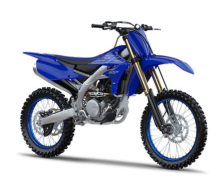

With an outstanding track record that includes numerous MX2 Grand Prix race wins as well as a string of 250 Supercross titles in the USA, the YZ250F is born to win. And with its reduced unsprung weight and refined suspension performance, this high-tech motocross weapon is sharper, quicker and smoother – ready to own the podium. A key feature of the YZ250F is the high-tech reversed head 250cc engine. Its unique front facing inlet forces fresh air into the fuel injector to give you holeshot-winning acceleration and instant power whenever you need it. And this compact engine layout contributes significantly towards the bike’s agile handling by centralising mass. Fast, agile and smart, the tuneable YZ250F is built to deliver the ultimate performance at every track.
